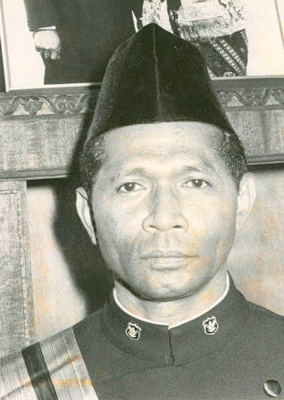
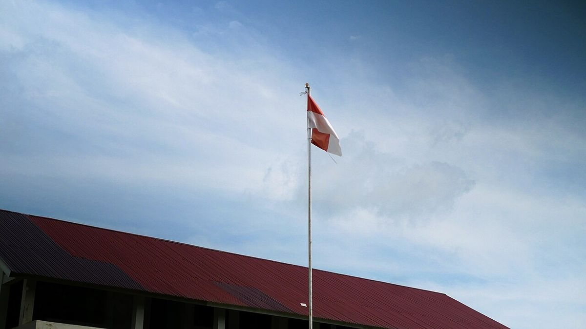

Frans Seda trending karena Presiden Prabowo Subianto menganugerahinya gelar Pahlawan Nasional pada Selasa, 10 November 2026, bertepatan dengan Hari Pahlawan. Nama putra Flores ini mendadak ramai dicari karena banyak orang baru mendengarnya untuk pertama kali, padahal jejaknya panjang, dari medan perang kemerdekaan sampai kursi Menteri Keuangan.
Franciscus Xaverius Seda, yang akrab disapa Frans Seda, lahir di Lekebai, Maumere, Flores, Nusa Tenggara Timur, pada 4 Oktober 1926 dan wafat di Jakarta pada 31 Desember 2009 dalam usia 83 tahun. Ia dianugerahi gelar Pahlawan Nasional lewat Surat Keputusan Presiden Nomor 93/TK/2026 tanggal 10 November 2026, sebagai satu dari 18 tokoh yang ditetapkan menerima gelar itu pada 2026. Kepastian penganugerahan tertuang dalam surat Kementerian Sosial Nomor 1932/5.5/PB.06.00/11/2026, dan upacaranya digelar di Istana Negara, Jakarta. Frans Seda pernah menjabat Menteri Perkebunan, Menteri Pertanian, Menteri Keuangan, dan Menteri Perhubungan, lalu menjadi Duta Besar RI untuk Belgia dan Luksemburg. Ia juga pendiri Universitas Katolik Indonesia Atma Jaya dan Ketua Umum Yayasan Atma Jaya selama 36 tahun. Bagi NTT, gelar ini istimewa karena Frans Seda menjadi Pahlawan Nasional keempat dari provinsi itu, sejajar dengan I.H. Doko, W.Z. Johannes, dan Herman Johannes.
Siapa Frans Seda dan kenapa namanya mendadak dicari?
Jawabannya sederhana: namanya resmi masuk daftar Pahlawan Nasional pada Selasa, 10 November 2026. Presiden Prabowo Subianto menganugerahkan gelar itu dalam upacara di Istana Negara, Jakarta, bertepatan dengan peringatan Hari Pahlawan. Media daring langsung menulis artikel penjelasan di hari yang sama, salah satunya berjudul "Kenapa Frans Seda Trending?", karena banyak pembaca mengetik namanya di Google tanpa tahu siapa dia.
Frans Seda menjadi satu dari 18 tokoh yang ditetapkan menerima gelar Pahlawan Nasional pada 2026, sesudah melalui seleksi dan penilaian bersama Dewan Gelar, Tanda Jasa, dan Tanda Kehormatan. Menteri Kebudayaan Fadli Zon menyampaikan jumlah itu sebelum upacara. Peringatan Hari Pahlawan 2026 sendiri mengusung tema "Pahlawanku, Teladanku: Melangkah Bersama, Melanjutkan Perjuangan".

Foto: Kedutaan Besar Indonesia di Brussels, domain publik, via Wikimedia Commons
Apa saja jejak pengabdian Frans Seda untuk Indonesia?
Frans Seda lahir di Lekebai, Maumere, Kabupaten Sikka, Flores, pada 4 Oktober 1926. Ia bersekolah di Kolese Xaverius Muntilan, lalu di HBS Surabaya, sebelum meraih gelar Sarjana Ekonomi dari Katholieke Economische Hogeschool, Tilburg, Belanda, pada 1956. Jalan hidupnya tidak dimulai di ruang rapat. Pada usia 19 tahun ia ikut menancapkan Merah Putih di Gedung Negara Yogyakarta dan menjadi Letnan I dalam Batalyon Paraja.
Karier pemerintahannya membentang dari era Presiden Soekarno sampai Presiden Soeharto. Ia menjabat Menteri Perkebunan pada 1964 sampai 1966, Menteri Pertanian pada 1966, Menteri Keuangan pada 1966 sampai 1968, lalu Menteri Perhubungan pada 1968 sampai 1973. Sebagai Menteri Keuangan, ia memimpin di tengah krisis ekonomi dan inflasi yang melonjak sampai sekitar 650 persen. Ia disebut berperan menstabilkan keuangan negara lewat penataan organisasi kementerian dan penerapan anggaran berimbang dalam APBN. Ia menaikkan harga bahan bakar dari Rp4 menjadi Rp16 per liter, kebijakan yang tidak populer tetapi ia pertahankan.
Ia sempat menjadi caretaker Menteri Perburuhan hanya sepuluh hari, dari 18 sampai 27 Maret 1966, dan dalam waktu sesingkat itu mengganti kata "buruh" menjadi "tenaga kerja", sehingga nama departemennya pun berubah. Sesudah dari pemerintahan, ia menjadi Duta Besar RI untuk Belgia dan Luksemburg merangkap Kepala Perwakilan Indonesia untuk Masyarakat Ekonomi Eropa pada 1973 sampai 1976. Pada era Reformasi ia masih diminta menjadi penasihat ekonomi Presiden B.J. Habibie pada 1998 dan penasihat Wakil Presiden Megawati Soekarnoputri pada 1999. Di luar pemerintahan, ia dikenal sebagai salah satu pendiri Yayasan Atma Jaya dan Ketua Umum Yayasan Atma Jaya selama 36 tahun, yayasan yang melahirkan Universitas Katolik Indonesia Atma Jaya di Jakarta.

Foto: Muhamad Izzul Fiqih, CC BY-SA 4.0, via Wikimedia Commons
Kenapa Frans Seda menolak dimakamkan di Kalibata?
Bagian yang paling banyak dibicarakan justru bukan daftar jabatannya, melainkan sikapnya sesudah tidak lagi menjabat. Pada 2007, Frans Seda memilih sendiri tempat peristirahatannya di sebuah kompleks pemakaman biasa di Karawang. Ketika wafat pada 31 Desember 2009, pemerintah menawarkan lahan di Taman Makam Pahlawan Kalibata, tetapi keluarga mengulangi permintaannya: ia tetap dimakamkan di Karawang dengan upacara militer kenegaraan. Sehelai rambut dan kukunya dibawa pulang ke Lekebai untuk dimakamkan menurut adat leluhur.
Emil Salim menyebutnya "Pahlawan Keuangan Indonesia", dan Sri Mulyani menyebutnya generasi pertama teknokrat yang membangun fondasi keuangan negara. Ada satu kalimatnya yang pantas diingat. Ketika ditanya apa yang sudah ia lakukan untuk NTT, ia menjawab bahwa ia menjadi menteri bukan untuk mengurus NTT, melainkan untuk kepentingan bangsa dan negara. Pada malam 22 Mei 1998, ketika ribuan mahasiswa bertahan di Gedung MPR/DPR dan bentrokan tinggal menunggu komando, Frans Seda menawarkan jalan keluar: bawa semuanya ke kampus Atma Jaya di Semanggi. Ia sendiri yang menelepon rektor dan meminta pagar kampus dibuka selebar-lebarnya, lalu puluhan bus masuk menjemput para mahasiswa.
Jadi, Frans Seda trending bukan karena sensasi, melainkan karena negara akhirnya memberi gelar yang lama ditunggu banyak orang di NTT. Ia menjadi Pahlawan Nasional keempat dari provinsi itu, sejajar dengan I.H. Doko, W.Z. Johannes, dan Herman Johannes. Kalau kamu baru mendengar namanya hari ini, sekarang kamu tahu kenapa namanya layak dicari.
Baca juga: Besok Hari Pahlawan 10 November 2026: Jadwal Upacara, Susunan Acara, dan Hening Cipta 60 Detik dan Hujan Meteor Leonid 17-18 November 2026: Cara Melihat dari Indonesia, Gratis dan Tanpa Teleskop, atau lihat artikel Other lainnya dan artikel riset lain di Blog.
Sumber dan Info Resmi
Fakta dan langkah di artikel ini merujuk ke sumber berikut:
- Rival: nama Frans Seda ramai dicari 10 November 2026; penganugerahan oleh Presiden Prabowo Subianto di Istana Negara bertepatan Hari Pahlawan; surat Kemensos Nomor 1932/5.5/PB.06.00/11/2026; satu dari 18 tokoh penerima gelar 2026; riwayat hidup, jabatan, dan angka inflasi sekitar 650 persen; pendiri Atma Jaya dan Ketua Umum Yayasan Atma Jaya 36 tahun; NTT kini punya empat Pahlawan Nasional; tema Hari Pahlawan 2026.
- Surabaya Inside: upacara Istana Negara 10 November 2026; surat Kemensos 1932/5.5/PB.06.00/11/2026 merujuk surat Sekretaris Militer Presiden 17/KSN/SM/GT.03.00/11/2026 tanggal 5 November 2026; 18 tokoh ditetapkan sesudah seleksi Dewan Gelar, Tanda Jasa, dan Tanda Kehormatan; riwayat jabatan dan angka inflasi sekitar 650 persen; pendiri Atma Jaya dan Ketua Umum 36 tahun; penasihat Habibie 1998 dan Megawati 1999.
- Wikipedia bahasa Indonesia: nama lengkap Franciscus Xaverius Seda; lahir 4 Oktober 1926 Maumere, wafat 31 Desember 2009 Jakarta usia 83 tahun; gelar Pahlawan Nasional lewat S.K. Presiden No. 93/TK/2026 tanggal 10 November 2026; tanggal-tanggal jabatan menteri; penerapan anggaran berimbang; potret tahun 1973 yang dipakai di artikel ini.
- Bajawa Press: tawaran lahan Taman Makam Pahlawan Kalibata ditolak, ia memilih pemakaman biasa di Karawang pada 2007 dan dimakamkan di sana dengan upacara militer kenegaraan, sehelai rambut dan kukunya dibawa ke Lekebai menurut adat; Letnan I Batalyon Paraja pada usia 19 tahun; caretaker Menteri Perburuhan 18-27 Maret 1966 dan mengganti kata "buruh" menjadi "tenaga kerja"; harga BBM naik dari Rp4 menjadi Rp16 per liter saat ia Menteri Keuangan; Emil Salim menyebutnya "Pahlawan Keuangan Indonesia" dan Sri Mulyani menyebutnya generasi pertama teknokrat; jawaban "menjadi menteri bukan untuk mengurus NTT, melainkan untuk kepentingan bangsa dan negara"; malam 22 Mei 1998 ia menelepon rektor Atma Jaya agar pagar kampus Semanggi dibuka untuk mahasiswa dari Gedung MPR/DPR.
- Jejak Hukum Indonesia: surat Kemensos 1932/5.5/PB.06.00/11/2026; lahir Maumere 4 Oktober 1926; lulus Tilburg 1956; Menteri Perkebunan 1964-1966; Dubes Masyarakat Ekonomi Eropa, Belgia, dan Luksemburg 1973-1976; pendiri dan Ketua Umum Yayasan Atma Jaya 36 tahun.